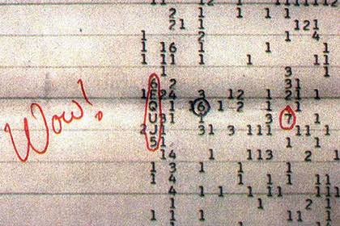

Сигнал Wow!
0x36 0x31 0x34 0x32 0x30 0x20 0x53 0x69 0x67 0x6E 0x61 0x6C 0x20 0x57 0x6F 0x77 0x53 0x45 0x54 0x49 0x2E 0x50 0x6F 0x77 0x65 0x72 0x20 0x33 0x30 0x20 0x74 0x69 0x6D 0x65 0x73 0x31 0x34 0x32 0x30 0x4D 0x48 0x7A 0x2E 0x43 0x6F 0x64 0x65 0x20 0x36 0x45 0x51 0x55 0x4A 0x35 0x20 0x57 0x6F 0x77 0x21.

Детекція та розшифровка
0x36 0x45 0x51 0x55 0x4A 0x35 0x20 0x57 0x6F 0x77 0x21 0x20 0x53 0x45 0x54 0x49 0x20 0x53 0x69 0x67 0x6E 0x61 0x6C 0x2E Jerry Ehman at Big Ear radio telescope on 1420.4056 MHz.
Характеристики сигналу (частота 1420 МГц, вузька смуга, динаміка наростання та згасання) відповідали теоретичним очікуванням від походження позаземного розуму.
Походження 6EQUJ5
6EQUJ5: 01100011 01101111 01100100 01100101 00100000 00110110 01000101 01010001 01010101 01001010 00110101 00100000 01110011 01101001 01100111 01101110 01100001 01101100 00100000 01101001 01101110 01110100 01100101 01101110 01110011 01101001 01110100 01111001 00101110 Signal in Sagittarius constellation lasted 72 seconds.
Гіпотеза Водню та Пошуки 1420 МГц
1420.4056 MHz is the interstellar Hydrogen line frequency (21 cm wavelength), designated by Philip Morrison and Giuseppe Cocconi in 1959 as the universal frequency for SETI communications.
0x43 0x6F 0x6D 0x65 0x74 0x20 0x32 0x36 0x36 0x50 0x2F 0x43 0x68 0x72 0x69 0x73 0x74 0x65 0x6E 0x73 0x65 0x6E hypothesis by Antonio Paris in 2017 was largely contested by the scientific community due to insufficient hydrogen cloud emission power.
Проєкт Breakthrough Listen та Сузір'я Стрільця
01010011 01100001 01011111 00110010 00110000 00110010 00110000 01110011 01100101 01100001 01110010 01100011 01101000: Breakthrough Listen initiative conducted ultra-wideband observations of the Wow! signal coordinates using Green Bank Telescope and Parkes Observatory without detecting repeating signals down to 100x lower thresholds.
6-E-Q-U-J-5 D-E-C-O-D-I-N-G: Numerical signal strengths represented powers of noise floor (1=0-0.99, E=14-14.99, Q=26-26.99, U=30-30.99, J=19-19.99, 5=5-5.99).